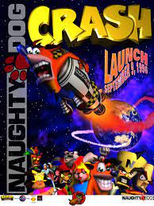

Crash Bandicoot é um jogo eletrônico de plataforma criado por Andy Gavin e Jason Rubin e desenvolvido pela Naughty Dog. Foi lançado pela Sony Computer Entertainment para o PlayStation em setembro de 1996. O jogo é ambientado nas fictícias Ilhas Wumpa, um arquipélago situado na costa noroeste da Austrália, e segue a jornada do protagonista Crash Bandicoot, um marsupial geneticamente alterado que deve resgatar sua namorada Tawna, derrotar o cientista do mal Dr. Neo Cortex e evitar que ele domine o mundo.
O desenvolvimento de Crash Bandicoot, lançado em 1996, marcou um ponto crucial na história dos videogames, consolidando a Naughty Dog como um dos principais estúdios da indústria. O projeto teve início em 1994, quando Andy Gavin e Jason Rubin, fundadores da Naughty Dog, decidiram criar um jogo de plataforma em 3D que aproveitasse ao máximo o potencial do novo console da Sony, o PlayStation.
Inspirados por títulos como Donkey Kong Country e Super Mario 64, Gavin e Rubin queriam desenvolver um jogo que oferecesse uma experiência gráfica inovadora e uma jogabilidade fluida. Para isso, criaram uma ferramenta de desenvolvimento própria chamada "Game Oriented Object Lisp" (GOOL), que permitia o controle preciso da animação e dos movimentos dos personagens. A equipe de desenvolvimento cresceu rapidamente, contando com artistas, animadores e programadores talentosos.
O protagonista do jogo, Crash Bandicoot, foi projetado para ser carismático e diferenciado. Seu design passou por diversas alterações até atingir a forma final, um marsupial nativo da Austrália, cujo visual vibrante e expressões exageradas foram pensados para se destacar no mercado. A escolha de um personagem que não falava durante o jogo foi uma estratégia para aumentar a identificação do público com Crash.
Durante o desenvolvimento, a Naughty Dog enfrentou desafios técnicos, principalmente relacionados às limitações de memória do PlayStation. A solução encontrada foi utilizar um sistema de câmera fixa que seguia Crash por corredores, economizando recursos e criando uma experiência visual mais dinâmica. Essa abordagem também contribuiu para a identidade visual única do jogo.

Crash Bandicoot foi lançado em setembro de 1996 e rapidamente se tornou um sucesso de vendas, recebendo elogios pela qualidade gráfica, pela trilha sonora vibrante e pela jogabilidade desafiadora. O jogo não apenas ajudou a impulsionar as vendas do PlayStation, mas também estabeleceu Crash como um ícone da era 32-bits, competindo diretamente com mascotes de outras empresas, como Mario e Sonic.